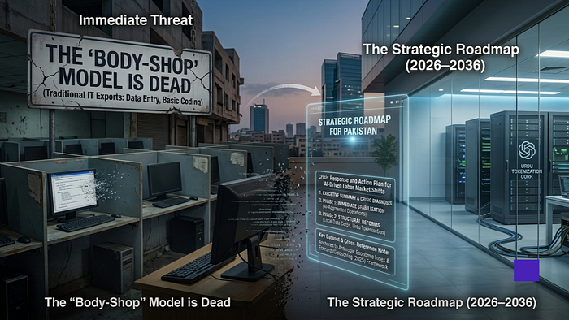
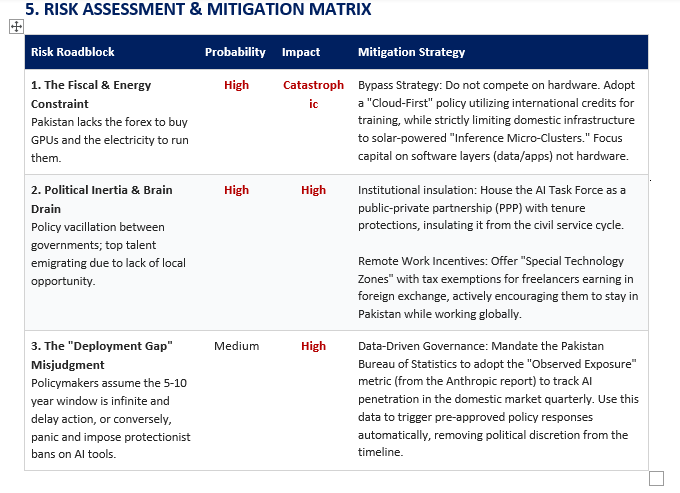

Crisis Response and Action Plan for AI-Driven Labor Market Shifts
Executive Summary and Crisis Diagnosis
The core challenge
Pakistan stands at a precarious economic cliff-edge. The global AI revolution is not creating a sudden explosion of unemployment, but rather a strangulation of entry-level opportunity. The data reveals a statistically significant 14% slowdown in hiring for younger workers (22-25) in highly exposed occupations. For a nation where over 60% of the population is under 30, this is an existential threat to its primary economic engine: the IT and freelance sectors.
Immediate and systemic threats
Immediate threat: the “body-shop” model is dead. Occupations that constitute the bedrock of Pakistan’s IT exports - computer programmers (74.5% exposure), customer service representatives (70.1%), and data entry keyers (67.1%) - are being automated globally. Pakistani graduates trained in rote coding or basic transcription are becoming unemployable before they even enter the workforce.
Systemic vulnerability: a dual-track infrastructure and education deficit. The power grid cannot support standard AI hyperscaling, and the education system teaches syntax (which AI does) rather than system architecture and oversight (which AI requires). If unaddressed, this will lead to a “lost generation” of youth and a collapse of the $3-4 billion IT export ambition.

Phase 1: Immediate Stabilization (0-6 Months)
Objective: Halt the hiring slowdown and prevent the immediate collapse of low-value BPO and IT exports.
- Emergency AI-Augmentation Task Force (MoITT). Establish a rapid-response unit within the Ministry of IT to map the observed exposure of Pakistan’s top 10 export categories. Freeze government-funded training for basic coding or data entry and redirect funding to AI operations and prompt-engineering certifications. Complete a risk audit of the top 50 IT export houses by month three.
- Junior Developer Survival Subsidy. Launch a targeted tax-credit scheme for IT export houses: a 50% tax rebate on salaries for fresh graduates with 0-2 years’ experience, when they are deployed in AI-enabled roles using tools such as Copilot or Claude. The goal is to counter the global hiring slowdown by retaining junior talent as AI-augmented operators.
- Human-in-the-Loop foreign direct investment push. Leverage Pakistan’s English literacy and low labor costs to attract global AI firms that need reinforcement learning from human feedback. Offer a five-year tax holiday to foreign AI companies that establish data-labeling and auditing centres in Pakistan.
Phase 2: Structural Reforms and Transition (6-18 Months)
Objective: Pivot the economy from AI-consuming to AI-adopting and build the scaffolding for local AI.
- HEC curriculum overhaul. Mandate a National AI Integration Policy for public and private universities. Phase out standalone syntax-focused degrees and introduce AI-augmented engineering tracks that cover RAG architecture, open-source model fine-tuning and ethical AI auditing, for rollout in the 2027 academic year.
- National Language Data Corps. Support the collection, cleaning and structuring of Urdu, Punjabi, Sindhi and Pashto datasets through grants to startups and universities. Release them as open-source sovereign assets to enable domestic AI deployment in agriculture, health and law.
- Regulatory sandbox for privacy. Pass an AI Deployment Act of 2026 that creates a sandbox for fintech and health-tech companies to train localized tools on consumer data with opt-out provisions, rather than adopting a rigid GDPR clone.
Phase 3: Long-Term Sustainability and Growth (18+ Months)
Objective: Solidify Pakistan’s role as the AI hub for the Global South and build resilience through vertical integration.
- Pragmatic compute strategy. Build solar-powered micro-clusters in tier-two and tier-three cities, including Sialkot and Faisalabad, for inference and fine-tuning rather than grid-dependent GPU data centres. This lowers capital costs, bypasses grid risks and decentralizes wealth creation.
- Vertical integration in zero-exposure sectors. Deploy local-language models in agriculture through SMS and voice bots, alongside satellite imagery and AI-led local weather and pest alerts. This supports a sector that employs more than 40% of the labour force without displacing field labour.
- Regional AI freelance cooperatives. Establish state-subsidized co-working spaces with high-speed internet and compute access in smaller cities, helping the freelance workforce shift from selling hours to delivering AI-managed solutions.

Dataset Cross-Reference
The metrics in this analysis, including task-level automation weights and occupational exposure data, are tied directly to Anthropic Economic Index datasets. The occupational crosswalks used to relate these effects to standard labour statistics rely on the Eckhardt and Goldschlag (2025) framework.
Disclosure: This article was developed using AI-driven research and analysis and edited for editorial accuracy.